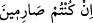
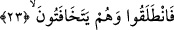
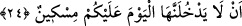
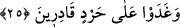

atmak ve tarlayı ekine hazırlamak” anlamındadır. Arapçada ürüne “hars” denir. Nitekim
tefsirini yaptığımız bu âyette yer alan “hars” kelimesi ürün anlamına gelir.
“
” ifâdesi, “sizler meyveyi kesmeyi, ürünü toplamayı istiyorsanız
erkenden yola çıkın” anlamına gelir.
23. Derken fısıldaşa fısıldaşa yola koyuldular.
Yâni kendilerini hiç kimse duymasın ve aralarına hiç kimse girmesin diye gizlice ve
alçak sesle kendi aralarında görüş alış-verişinde bulunmaya başladılar.
24. Aman, bugün orada hiçbir yoksul yanınıza sokulmasın! (diye fısıldaştılar.)
Âyetteki “orada” ifâdesinden maksad “o bahçede” demektir. “Lâ yedhulennehâ”
fiilinin başındaki “en” en-i mufessiredir. Çünkü “fısıldaşmak” anlamına gelen “tehâfüt”
kelimesinde “kavl/konuşma” anlamı vardır. Buna göre “orada hiç kimse yanınıza
girmesin” ifâdesi, “tehâfüt/gizli konuşma” fiilinin tefsiri olmuş olur. Bir başka ifâdeyle;
“aralarında gizlice bu konuyu görüşmüşler” demektir.
“Miskin”, hiçbir şeyi olmayan yoksul kimse demektir. Miskin, fakirden daha yoksul
olan kimseyi ifâde eder. Yoksul kimsenin o bahçeye girmesinin yasaklanmasından
maksad, oraya girmesine fırsat verilmesini yasaklamak anlamınadır. Bu tıpkı birisinin,
herhangi bir kimseye “seni burada görmeyeyim” cümlesi gibidir. Çünkü yoksul kimsenin
onların bahçelerine girmesi, yoksulun oraya girmesine fırsat verilmesi demektir. Tıpkı
örnek cümlemizde, yasaklamayı getiren kimsenin yasak ettiği kişiyi görmesinin, o
kimsenin huzûruna gelmesini gerektirmesi gibi. Şu hâlde bu ifâde, lâzımın zikri ve
melzûm irâde edilmesi kabilinden mecaz-ı mürsel olmuş olur.
25. (Evet, yoksullara yardıma) güçleri yettiği hâlde, onları yardımdan mahrum
etmek niyet ve azmi ile erkenden yola düştüler.
“Mahrum etmek” şeklinde tercüme ettiğimiz “hard” kelimesinin incelemesini yapmak
gerekirse; kelime, “herhangi bir kimseyi hiddet ve kızgınlıkla yasaklamak ve
engellemek” anlamınadır. Meselâ “nezele fulânun harîden” cümlesi, “filanca kimse
insanlara karışmaksızın bir yere konakladı” anlamına gelir. Kelimenin bu şekilde